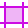

Options
The following options are available in the panel:
- Visible in export—when enabled, the item is visible and can be exported. When disabled, the item is hidden and can't be exported.
- Make item visible—when enabled, the item is visible. When disabled, the item is hidden. The item can be exported in both states.
 Edit All Layers—allows selection of objects across all layers (rather than the current layer).
Edit All Layers—allows selection of objects across all layers (rather than the current layer).-  Create Slice—creates a slice from the selected artboard, layer, group or object in readiness for export.